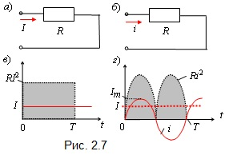
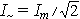

При протекании синусоидального тока i(t) = Imsinωt через резистор с линейным сопротивлением R (рис. 2.7б) в нем за период Т выделяется энергия

равная энергии, выделяющейся в резисторе R (рис.2.7а) при протекании через него постоянного тока I в течение времени Т (закон Джоуля-Ленца).

Значения этих энергий пропорциональны заштрихованным площадям (рис. 2.7в и г). Из этого равенства получают формулу действующего значения синусоидального тока , при протекании которого через резистор R, в нем выделяется такое же количество теплоты, как если бы через резистор протекал постоянный ток I.
Итак, действующее значение гармонического тока i(t) = Imsinωt − это его среднеквадратичное значение за время Т, т.е.
.(2.7)
Таким образом, действующее значение тока (действующий ток) равно его амплитуде, делённой на . Аналогично определяют действующие значения гармонического напряжения и ЭДС:
Действующие значения гармонических функций обозначают соответствующими прописными буквами I, U, E, что и амплитудные значения, но без индекса m. Действующий ток (напряжение) – это основной эксплуатационный параметр цепей синусоидального тока, так как тепловое действие тока и механическая сила взаимодействия проводников с токами пропорциональны квадрату тока (произведению токов). Шкалы большинства измерительных приборов (амперметров, вольтметров) проградуированы на эти значения.